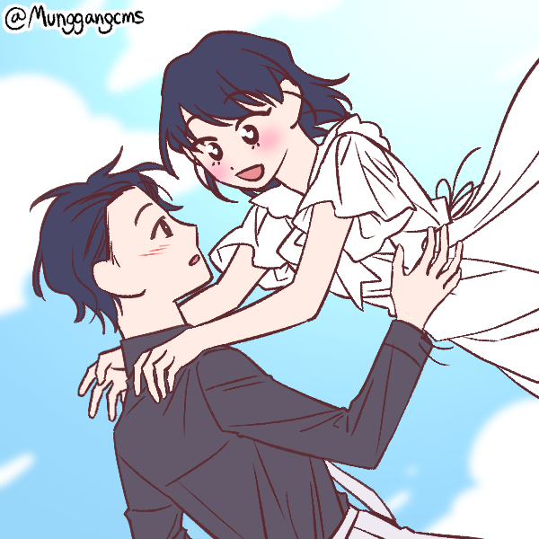
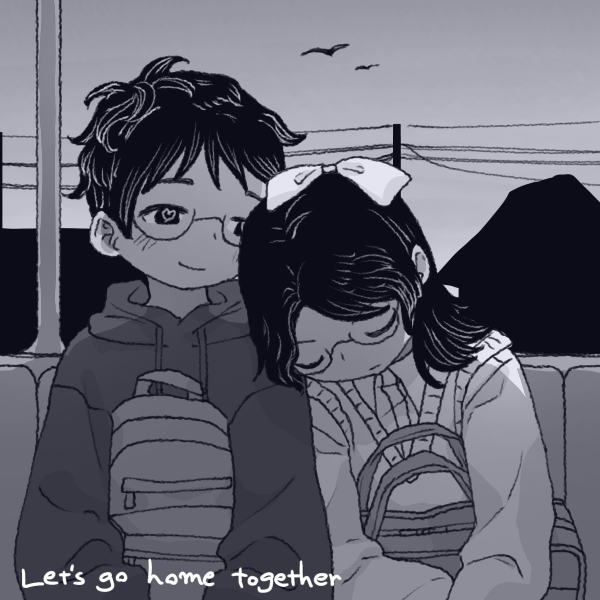
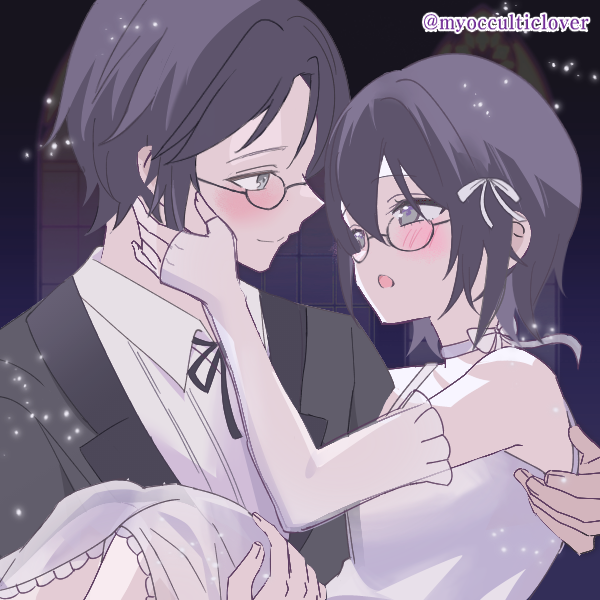
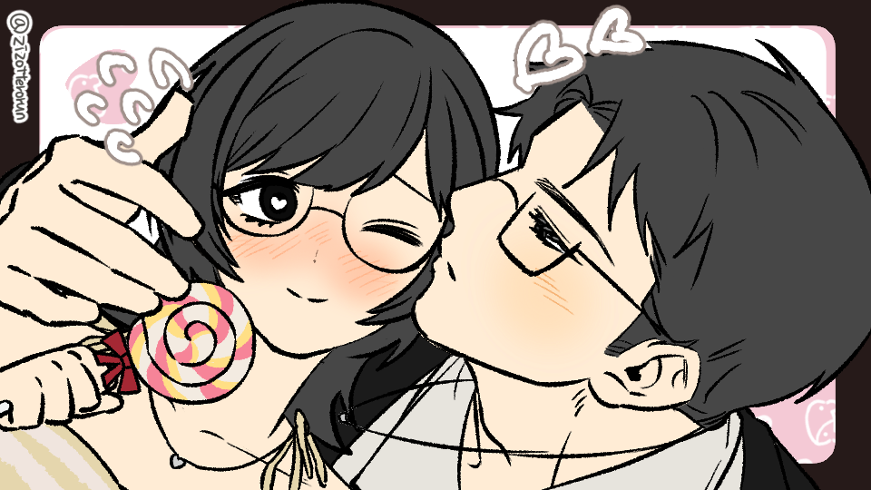

Hola cariño, creo que en cuanto leas esto sería de noche. Me tardé más de lo esperado por algunos errores en esta cosa jajaja. Es la primera vez que hago algo así, entonces, si algo no queda bien acomodado unu, asumo toda la responsabilidad. Aún no aprendo a que estas cosas puedan verse bonitas en celular, así que, si lo abriste en tu celular, ya valiste, amor jajaja. En realidad, comencé con esto la semana pasada... porque la última vez siento que el mini periódico que hice estaba muy simple :o, podría haber sido más bonito. Me pregunto si acaso has sentido que me he dedicado menos a ti y a nosotros, ¿te he hecho sentir así?
Espero que no, en realidad... porque no es algo que quisiera que sientas. En realidad, sabes que yo adoro dedicarme a ti, eres mi persona favorita, creo que es obvio. Me gusta mucho cuando puedo hacer algo que te haga feliz, o algo que te haga sentir más ligero y más cómodo. Me gusta servirte de alguna forma, me parece lindo poder hacerlo y que me lo permitas también... es mi forma de cuidar de ti, el hacer cosas por ti, aunque a veces no quieras que lo haga o no me dejes hacerlo jajaja. ¿Sabes? Inicialmente iba a hacer una sopa de letras en la que, cuando encontraras todas las palabras, se formara un corazón; no existen páginas que mantengan una distribución igual en las sopas de letras, entonces tuve que buscar alguna alternativa. Bueno, el tema es... si algo está roto, seguro lo cargué bien, así que ahí me avisas uou.
Estamos cumpliendo dos años y 8 meses, es bastantito, ¿no? Yo digo que ya va siendo hora de que nos casemos jajaja. De todas formas... es contigo con quien quiero pasar el resto de mi vida, así que, en cualquier momento que lo mencionaras, yo felizmente accedería a casarme, aunque solo fuera firmar el documento frente a un juez. En verdad quiero poder pasar el resto de mis días a tu lado, sean muchos o pocos los que me queden... no existe ni existirá alguien con quien sienta esto que siento contigo... no lo hay. Y es curioso, no sé si esto es eso del primer amor o qué sé yo de las teorías de redes jajaja, pero dicen que el primer amor es el que no se puede olvidar aunque lo intentes, porque lo intenté, si te soy sincera, cuando ocurrió lo de Ruby porque nada se sentía bien ni seguro... pero no pude. No sé qué hiciste, en mí quiero decir... porque, aunque me enamoro mucho y de forma muy intensa, si alguien me hería mucho o hacía algo que me quebrara, yo... no volvía. No sé por qué contigo sí. No me arrepiento de hacerlo, espero no lo malinterpretes, solo me resulta demasiado curioso. Me gustaría creer que he crecido y he madurado y por eso es que contigo quiero seguir, pero quizá simplemente te amo mucho.
¿Sabes? Hace unos días estaba leyendo nuestras primeras conversaciones. Eras muy tierno jajaja, lo sigues siendo, pero antes parecías... más suave. Creo que es lo que a todos nos pasa al crecer, dejamos atrás ciertas cosas y en ti se notó un poco. No hablo de las expresiones de amor, sino... de la forma en la que hablas y en cómo eres(?, antes parecías un poco más caótico, creo que incluso algo impulsivo comparado a ahora. Este tiempo te he notado más precavido, quizá es porque has madurado un poco, eso es tierno. Pero, no sé por qué pensar en ti más joven y verte ahora, aunque solo han sido dos años... has crecido, cariño, en muchas cosas. No eres parecido a quien eras antes y, aunque hay cosas que extraño de ese jovencito dulce, hay muchas más cosas que admiro y amo del hombre que eres ahora. Muchas cosas que sé que en un tiempo más es probable que cambien, y quiero estar a tu lado mientras eso sucede, para volver a enamorarme de ti. En todas las veces que cambies, que crezcas, que aprendas algo nuevo, que haya algo nuevo que te guste... quiero volver a conocerte, una y otra vez, y volver a enamorarme de ti como lo hice en diciembre.

Mis sentimientos son los mismos, aunque soy consciente de que yo también cambié. Quizá hay cosas que tú también extrañas de mí y no lo dices, o tal vez no has notado que yo también crecí un poco jajaja. Quizá aún sigo pareciendo una niña, o me veas aún un poco inmadura en algunas cosas (lo acepto, lo soy en muchas), pero pese a ello... también quiero que me veas crecer contigo. Me has ayudado a madurar en varios aspectos, a corregir cosas que sin ti nunca habría visto que necesito cambiar. Incluso... eres una de las razones por las que me levanto de la cama (Samy es la otra, que si no no come jajaja), y ojalá algún día dejes de ser solo "una razón" y te conviertas en quien me dé el beso de los buenos días. Me gustaría, ahora mismo, darte un beso, pero sé que si lo intentara estaría demasiado nerviosa como para hacerlo, quizá ni siquiera podría pedirlo por mi cuenta. Pero, sin importar eso... espero que en poco tiempo en verdad pueda recargar mi mejilla contra tu pecho, sentir tu perfume y el calor de tus brazos al rodearme. Oh, Dios, estoy tan sensible, llevo llorando todo este tiempo jajaja :,3.
Sé que capaz me regañarías por llorar, no me gusta preocuparte tampoco, pero quise ser transparente. Estuve buscando canciones bonitas que poner de fondo, las estás escuchando?, porque si no por gusto llevo sentada en esta silla ya varios días unu.
Te amo
Sé que te lo digo mucho, quizá más de lo que debería. Pero, me gusta decirte que te amo, y recordártelo de muchas formas. Al inicio, cuando la relación se enfrió mucho, lo hacía porque sentía que debía hacerlo para no perderte. Creía que, si te daba mucho mucho amor... no me dejarías, o no encontrarías a alguien más, o incluso creerías que merecía tu amor y me lo darías. Ahora ya no lo hago en realidad, aunque aún a veces me asusta la idea de que encuentres a alguien mejor, te doy mi amor porque siento que te gusta recibirlo. Te gusta, verdad?

Espero que te guste, en todo caso..., ufff tengo hambre. Sabes?, aunque estos dos años han sido bastante caóticos, intensos y a veces frustrantes, no lo cambiaría por nada. Me gusta nuestra historia, con sus dramas, rupturas, heridas y baches. Muchas de esas cosas vienen acompañadas de sentimientos dulces y bastante puros que no me gustaría perder jamás. No somos una pareja normal, en realidad, aunque sí que caemos en varios clichés románticos jajaja, pero igual.. siento que nuestra relación es especial. Algo que no se puede replicar, ni siqueira nosotros mismos podríamos replicarlo. Y eso.. es lindo. Quiero que sigamos construyendo una relación que no se puede replicar, con nuestros problemas, nuestras inseguridades, nuestras heridas.. y con nuestros besos, nuestros mimos, nuestros apodos, nuestras bromas internas... mnh, recuerdas el "te amo naw"? jajaja. Lo encontré de nuevo leyendo nuestros chats, lo enviaste el 22, técnicamente 24 horas después de que nos hicimos novios.
Creo que ya lo sabes bien, pero me gustas demasiado. Y me gusta decirlo, que me gustas mucho, quiero besarte y me encantas demasiado también, no sé como es posible que exista un ser tan bello y lindo como tú, pero realmente me siento afortunada de tenerte a mi lado. Afortunada y dichosa, creo que esas serían las palabras adecuadas para describir lo que siento cada que pienso "Ah, sí, él es mi novio, es mío".
En todo caso... feliz mes, mi amor, gracias por todo el tiempo que me has dado y me has dedicado. Gracias por cuidarme, amarme, ser bueno conmigo y siempre estar a mi lado. Te amo, mucho.


Dancing in the crowd
Dyar Pshder